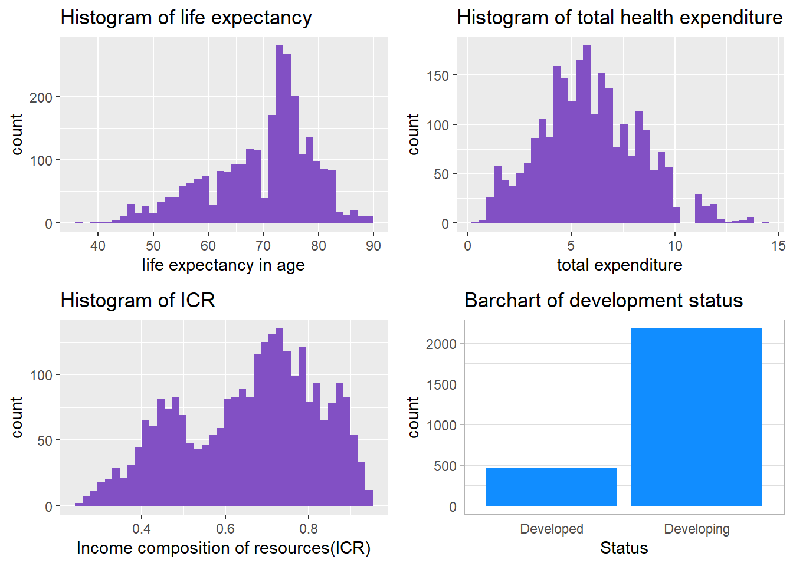

The Data that I used to answer my research question is based on the WHO data and published on Kaggle by Kumar Rajarshi. This dataset includes values social factors of 193 countries from 2000 to 2015 and the life expectancy in age. In our research question, we are aim to compare the impact of government health expenditure and Human Development Index on life expectancy. These two predictors are represent by ‘Total expenditure’ and ‘Income composition of resources’ in our dataset. The target is life expectancy. Since we also stated that social factors may have a big difference between developed and developing countries. We sill also include the binary variable ‘Status’ that idicate the development status of a country. All of these variables will change across years. Here are the variable details.
life expectancy: Life Expectancy in age Total expenditure: General government expenditure on health as a percentage of total government expenditure (%) Income composition of resources: Human Development Index in terms of income composition of resources (index ranging from 0 to 1) Status: Developed or Developing status
Link of data: https://www.kaggle.com/kumarajarshi/life-expectancy-who
Before answering our research question, we need to do Exploratory Data Analysis first to find issues in our data, clean our data, and make summary statistics, plots, and graphs for our key variables.
| num_na | |
|---|---|
| Country | 0 |
| Year | 0 |
| Status | 0 |
| Life expectancy | 10 |
| Adult Mortality | 10 |
| infant deaths | 0 |
| Alcohol | 193 |
| percentage expenditure | 0 |
| Hepatitis B | 553 |
| Measles | 0 |
| BMI | 34 |
| under-five deaths | 0 |
| Polio | 19 |
| Total expenditure | 225 |
| Diphtheria | 19 |
| HIV/AIDS | 0 |
| GDP | 448 |
| Population | 652 |
| thinness 1-19 years | 34 |
| thinness 5-9 years | 34 |
| Income composition of resources | 167 |
| Schooling | 163 |
The table I presented is the number of missing values in each columns. For example, there are 167 missing values in Income composition of resources. We will do the missing value imputation in the next section.
| axis | value |
|---|---|
| num_observations | 2937 |
| num_variables | 22 |
We have 2937 number of observations and 22 number of variables in our dataset.
| Life expectancy | Total expenditure | Income composition of resources | |
|---|---|---|---|
| Min. :36.30 | Min. : 0.370 | Min. :0.0000 | |
| 1st Qu.:63.10 | 1st Qu.: 4.260 | 1st Qu.:0.4930 | |
| Median :72.10 | Median : 5.755 | Median :0.6770 | |
| Mean :69.22 | Mean : 5.938 | Mean :0.6275 | |
| 3rd Qu.:75.70 | 3rd Qu.: 7.492 | 3rd Qu.:0.7790 | |
| Max. :89.00 | Max. :17.600 | Max. :0.9480 | |
| NA’s :10 | NA’s :225 | NA’s :167 |
The summary statistics of key variables help us to find the issues and reliability of our data. According to the summary table we get, variable ‘Life expectancy’ and ‘Total expenditure’ do not have big issues and in our estimated bound(life expectancy should be greater than 0 and less than 100, total expenditure should be greater than 0 and less than 100 since it represents proportion). However, the variable ‘income composition of resources’ has minimum values equals to 0. Since this variable indicate human development index, its impossible to have 0 values. According to the worldpopulationreview.com, the country with lowest HDI in 2019 is Niger with 0.394. Hence, 0 income composition should be removed from the data set in order to prevent wrong model fitting.
We removed the observations with 0 income composition and the new summary statistics is as followed.
| Life expectancy | Total expenditure | Income composition of resources | |
|---|---|---|---|
| Min. :36.30 | Min. : 0.370 | Min. :0.2530 | |
| 1st Qu.:63.80 | 1st Qu.: 4.270 | 1st Qu.:0.5230 | |
| Median :72.30 | Median : 5.730 | Median :0.6870 | |
| Mean :69.59 | Mean : 5.889 | Mean :0.6584 | |
| 3rd Qu.:75.70 | 3rd Qu.: 7.470 | 3rd Qu.:0.7840 | |
| Max. :89.00 | Max. :14.390 | Max. :0.9480 | |
| NA’s :3 | NA’s :174 | NA |
We need to check the distribution of our variables. This helps to determine outliers, skewness, and whether it is appropriate to fit the model.
 According to the histograms we have for those three numeric variables, their distribution is almost normal, indicating linear model may be better options. However, there are also several issues. Firstly, the distribution of ICR is bimodal, the distribution of life expectancy is left skewed, and the distribution of total health expenditure is right-skewed. Secondly, the peak value of life expectancy and health expenditure have a very high count, which may pull our model become more centralized. Thirdly, according to the bar chart, the number of developing county is much more that that of developed country, which means, if we add status variable to our model, the data of developing country may pull our model and become biased.
Copyright © 2022, Shiyuan(Eric) Zhou.